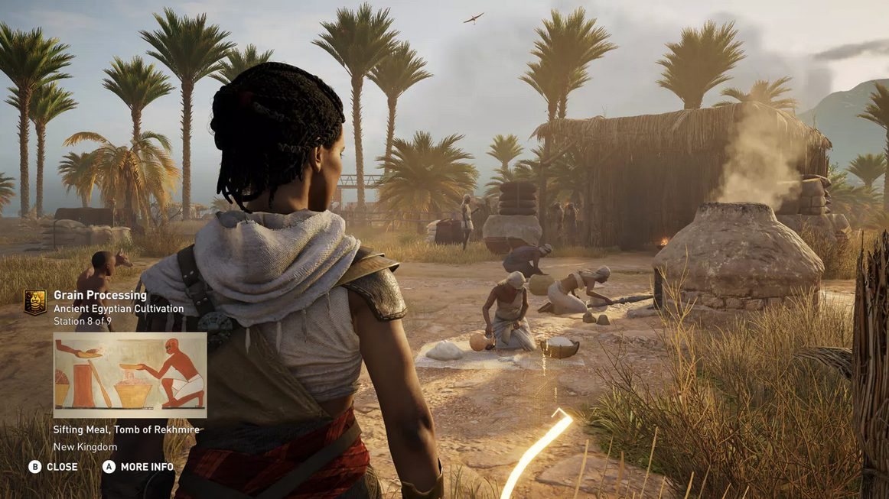

- Art des Spiels
- Digital
- Plattformen
- PC, PlayStation 4/5, Xbox One, Xbox Series X/S
- Genre
- Bildungssoftware/Simulation
- Empfohlenes Alter
- Ab 7 / 12 Jahren
- Spieleranzahl
- Einzelspieler
- Spieldauer
- Variabel; Nutzer können in ihrem eigenen Tempo lernen und erkunden
- Einstiegsschwierigkeitsgrad
- Moderat
- Kosten
- Kosten des jeweiligen Spiels (ca. 20.- bis 70.- CHF)
Kurzbeschreibung
Assassin's Creed Discovery Tour ist eine Bildungsplattform, die die historischen Welten der Assassin's Creed Videospiele in interaktive, lehrreiche Erkundungstouren umwandelt. Spieler können die detailreichen Nachbildungen des antiken Ägyptens, des Nordens zur Wikingerzeit und Griechenlands frei erkunden, ohne sich den Herausforderungen und Kämpfen der Hauptspiele stellen zu müssen. Die Discovery Tours bieten geführte Touren, die von Historikern und Ägyptologen kuratiert wurden, um tiefgreifende Einblicke in das tägliche Leben, die Kultur, die Gebräuche und die Geschichte dieser Zivilisationen zu vermitteln.
Besondere Merkmale
Historische Genauigkeit: Entwickelt in Zusammenarbeit mit Historikern und Archäologen, um eine authentische Darstellung der antiken Welten zu gewährleisten.
Interaktive Lerninhalte: Bietet Dutzende von Stunden an Bildungsinhalten durch geführte Touren und interaktive Elemente.
Freie Erkundung: Ermöglicht den Nutzern, in ihrem eigenen Tempo zu lernen und die antiken Städte frei zu erkunden.
Besondere Anforderungen
Keine speziellen Hardware-Anforderungen über die Grundanforderungen der Plattform hinaus; Internetverbindung für den Download und eventuelle Updates.
Lernpotenzial
Die Discovery Tour fördert das historische Verständnis und das Interesse an der Geschichte, indem sie ein immersives Lernerlebnis bietet, das über traditionelle Lehrmittel hinausgeht. Schülerinnen und Schüler verbessern ihre Kenntnisse über antike Zivilisationen, verstehen kulturelle Unterschiede und Gemeinsamkeiten und entwickeln kritisches Denken durch die Analyse historischer Quellen und Kontexte.
Unterrichtsrelevanz
Diese Art von Spiel bietet eine innovative Methode, Geschichte und Kultur im Unterricht zu vermitteln. Durch die interaktive Erkundung können Schülerinnen und Schüler ihr Lernen selbst gestalten und vertiefen. Die Assassin's Creed Discovery Tours eignen sich hervorragend, um Themen wie die antike Welt, Architektur, Glaubenssysteme, das tägliche Leben und vieles mehr anschaulich und engagierend zu präsentieren.
Links und Quellen
Offizielle Website mit Unterlagen und FAQ für Lehrpersonen: Ubisoft Discovery Tour
Fazit
Assassin's Creed Discovery Tour ist eine beeindruckende Ressource für den Geschichtsunterricht, die es ermöglicht, historische Inhalte auf eine moderne, interaktive und engagierende Weise zu vermitteln. Durch die Nutzung der Videospiele als Bildungstool können Lehrende das Interesse der Schülerinnen und Schüler wecken und ihnen ein tieferes Verständnis historischer Ereignisse und Kulturen bieten und selbst ins Staunen kommen.